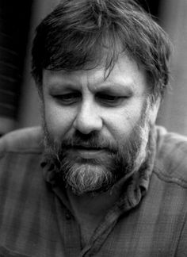
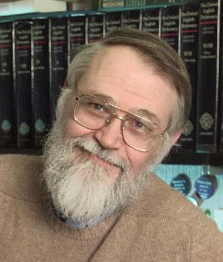

home
Corduroy's Link Hoarding Cupboard
Table of Contents
What is this page?
Welcome to my humble abode. I've become something of an online trashman over the past few years -- I often stumble upon information that I don't want to lose, so I organize it here for my convenience (and maybe yours too, dig around maybe you'll find something cool). This is also a place to commemorate people who I admire. I like to humanize the gurus and legendary personas that I read and hear about. I find that birthdays help with this -- did you know that Ken Thompson and I almost share a birthday!? Have a good stay.
Notes
Note 0: This page looks like this on purpose. In this version of reality overrun by GUIs, JavaScript and the like, it's easy to forget about the most important part of your web page -- the content. If you go to the homepage of my site [as of 4/2019] you'll see a giant animated CSS dog which has nothing to do with my website. I'm a victim! Cool stuff looks cool, but it's important to not lose sight of the purpose of your project. Thus, maintaining this page will allow me to practice discipline and to keep HTML and CSS separated, as 'mechanism' and 'policy' should be separate. For more info, see this, and this.
The history and people of Computer Science
Much like everything else in life, CS didn't appear out of thin air. I seldom come across anyone interested in the culture and history of Computer Science and its subgroups, which is sad and kind of strange. The public view of CS seems to paint it as an ultra-practical skillset and a pathway to economic success. Perhaps this is a symptom of the divide between STEM and the humanities, or the inevitable side effect of Late Capitalism. Either way, to the layman, this rich history is virtually unknown, and Computer Science seems to be boiled down to the technical sum of its parts.
With that in mind, here's a list of people worth knowing (in no particular order):
Richard Stallman (RMS)
Eric S. Raymond (ESR)
Linus Torvalds
Jon Hall (maddog)
Dennis M. Ritchie
Ken L. Thompson
Brian W. Kernighan
Donald Knuth
John Von Neumann
John G. Kemeny
Alan Turing
Ada Lovelace
Charles Babbage
Tim Berners-Lee
Doug Engelbart
Edsger Dijkstra
John McCarthy
Aaron Swartz
Terry Davis
Joe Armstrong
Francesco Vianello
Richard Feynman
Leonard Susskind
Isaac Newton
Gottfried Wilhelm Leibniz
Leonhard Euler
George Boole
Paul Erdös
Vint Cerf
Great reads
* In the Beginning was the Command Line
* A history of the Amiga (parts 1 - 12) (1) (2) (3) (4) (5) (6) (7) (8) (9) (10) (11) (12)
* Everything on catb.org
* Learn about Free Software from Stallman, here
* Why Erlang is the only true computer language
* The Lesson of Grace in Teaching
* Gödel, Escher, Bach: an Eternal Golden Braid
* Hackers: Heroes of the Computer Revolution
* Diligence, Patience, and Humility by Larry Wall
* The Humble Programmer by Edsger W. Dijkstra
Favorite talks
* Python as C++’s Limiting Case, by Brandon Rhodes
* The Mess We're In, by Joe Armstrong
Birthdays!
Richard Stallman
March 16th, 1953
Ken Thomspon
February 4th, 1943
John Von Neumann
December 28th, 1903

Charles Babbage
December 26th, 1791
Kurt Gödel
April 28th, 1906
Slavoj Žižek
March 21st, 1949
Eric Raymond
December 4th, 1957
Dennis Ritchie
September 9th, 1941
John G. Kemeny
May 31st, 1926
Augusta Ada King, Countess of Lovelace
December 10th, 1815
Maurits Cornelis Escher
June 17th, 1898
Richard Feynman
May 11th, 1918
Jon Hall
August 7th, 1950
Brian Kernighan
January 1st, 1942
Alan Turing
June 23rd, 1912

Joseph Marie Jacquard
July 7th, 1752
Johann Sebastian Bach
March 31st, 1685
Larry Wall
September 27th, 1954
Kool Links
Computer-related
* Javidx9, a friendly computer wizard
* The Cherno Project's C++ Tutorials
* Harvard CS50 Intro To Computer Science Videos
* Stanford Computer Science Nifty Assignments
* Functional Programming in OCaml
* Computer Science from the Bottom Up
* +ORC
* DaedTech (Existentialist Programmer Thoughts)
* Reflections on Trusting Trust
* Nils M Holm's Bits and Pieces
* Handmade Hero (click this for some context)
* Moss (Measure Of Software Similarity)
* Find LaTeX Symbol's Code by Drawing It
* The Whitney Museum Portal to Net Art
* WikiWikiWeb, the original Wiki
* Making Homebrew PS1 Games in C
* RackAFX7, a DAW Plug-In Designer Software
Miscellaneous
Quotes, terms, an oxford comma, and etcetera
Playing over these moves is an eerie experience. They are not human; a grandmaster does not understand them any better than someone who has learned chess yesterday. The knights jump, the kings orbit, the sun goes down, and every move is the truth. It's like being revealed the Meaning of Life, but it's in Estonian.
Today science is biased towards rejecting any theory involving God. It is called naturalism. It proposes that any and all observable phenomena must have a natural cause. It also has the side-effect of barring God from having any influence in the world. If it appears that God has an influence in the world, a different explanation must be found. And men are masters of creating alternative explanations. It is called skepticism.
Education is an extension of the human instinct to reproduce. One of the things we should be doing is to purposely invent better ways to think, and then figure out how to teach them to children to create much more able adults than we are.
Anyone can cook, but only the fearless can be great
Hedonic treadmill
From soup to nuts
Debugging is twice as hard as writing the code in the first place. Therefore, if you write the code as cleverly as possible, you are, by definition, not smart enough to debug it.
Most Non-Unix managers conclude that VI is either extraterrestrial in origin or was devised by the original Unix developers as part of a secret communications code to reach another dimension.
xyzmy@pantsexample.com -- To email me, first you have to remove my pants.
Benevolent Dictator For Life
The moral is obvious. You can't trust code that you did not totally create yourself.
im 86 years old, and, uh, im in the bathtub with two crocodiles, they're like pet crocodiles, cause real crocodiles have gone extinct, so they're like small and pink, and they're crawling all over me, im drinking nice, moroccan coffee, and im listening to old chief keef demos, and just like, beautiful, women everywhere, exotic pets, and i don't know i go down and check the mail
chrestomathy
In the 80s and 90s, engineers built complex systems by combining simple and well-understood parts. The goal of SICP was to provide the abstraction language for reasoning about such systems. Today, this is no longer the case. Engineers now routinely write code for complicated hardware that they don’t fully understand (and often can’t understand because of trade secrecy.) The same is true at the software level, since programming environments consist of gigantic libraries with enormous functionality. Programming today is “More like science. You grab this piece of library and you poke at it. You write programs that poke it and see what it does. And you say, ‘Can I tweak it to do the thing I want?'”. The “analysis-by-synthesis” view of SICP — where you build a larger system out of smaller, simple parts — became irrelevant. Nowadays, we do programming by poking.
I have no idea if other fields have this same problem — my guess is that physicists are particularly prone to it, since we are trained early on to think that physicists are simply smarter than chemists or biologists. Those other fields are for the hard workers. We don’t put mathemeticians on this scale, because we secretly believe they’re smarter than us. Note to the biologist lynch mob: tounge is in cheek.)
Enjoy your work
ex nihilo nihil fit
one should base one’s work satisfaction on realistic achievements, such as advancing the state of knowledge in one’s specialty, improving one’s understanding of a field, or communicating this understanding successfully to others, rather than basing it on exceptionally rare events, such as spectacularly solving a major open problem, or achieving major recognition from one’s peers.
There is no royal way to geometry
we should be getting as much baloney as possible out of our own sandwiches.
after cultivating the right habits around doing nothing, you can actually obtain animal consciousness where you do not desire to do things.
Everybody writes a screen editor. It's easy to do and makes them feel important. Tell them to work on something useful.
Dotfile Madness. We are no longer in control of our home directories.
What you do need is some amount of time spent on the idea that computer programs are mathematical objects which can be reasoned about mathematically. This is the part that the vast majority of people are missing nowadays, and it can be a little tricky to wrap your brain around at first.
of course it runs NetBSD
Ken Thompson was once asked what he would do differently if he were redesigning the UNIX system. His reply: "I'd spell creat with an e."
Radio on TV
C is a Spartan language, and so should your naming be. Unlike Modula-2 and Pascal programmers, C programmers do not use cute names like ThisVariableIsATemporaryCounter. A C programmer would call that variable tmp, which is much easier to write, and not the least more difficult to understand.
free software without any warranty but with best wishes
Why don't you tell us what you are attempting to accomplish and perhaps we can suggest an easier way to "skin this cat".
I find it bizarre that people use the term "coding" to mean programming. For decades, we used the word "coding" for the work of low-level staff in a business programming team. The designer would write a detailed flow chart, then the "coders" would write code to implement the flow chart. This is quite different from what we did and do in the hacker community -- with us, one person designs the program and writes its code as a single activity. When I developed GNU programs, that was programming, but it was definitely not coding. Since I don't think the recent fad for "coding" is an improvement, I have decided not to adopt it. I don't use the term "coding", except if I were talking about a business programming team which has coders.
anything that’s truly real can stand up to scrutiny
If you are anything like me, then you are not an astrophysicist.
nota bene, "note well"
Leaning toothpick syndrome
A notable group of exceptions to all the previous systems are Interactive LISP [...] and TRAC [...] Their only great drawback is that programs written in them look like King Burniburiach's letter to the Sumerians done in Babylonian cuniform!
Neo-Luddism
I never metacharacter I didn't like
Sneakernet
lots of cream, lots of sugar
People often miss this, or even deny it, but there are many examples of object-oriented programming in the kernel. Although the kernel developers may shun C++ and other explicitly object-oriented languages, thinking in terms of objects is often useful. The VFS [Virtual File System] is a good example of how to do clean and efficient OOP in C, which is a language that lacks any OOP constructs
Thompson: One day I got this idea -- pipes, essentially exactly as they are today. I put them in the operating system in an hour -- they're trivial, they really are super trivial when you've got redirecting IO like UNIX already had.
The idea was just mind blowing to us. Dennis and I came in and rewrote everything in the world -- our world, in one night. We converted everything. Mostly what we did was throw out extraneous messages. Like, sort would never say "hey I'm sorting, I'm merging, I'm doing this, I'm working on this file". All that garbage is gone -- sort would read, sort, then write. And suddenly sort was what we'd call a "filter" in that day. Then we converted everything that processed something into filters. It was massive, and just exciting.
Kernighan: And the world changed, essentially overnight.
Thompson: I've always been interested in chess, I played it when I was in 7th grade because that's when Bobby Fischer was right at his height. Bobby Fischer and I are like 10 years apart in age, except that he's dead. So, I would come home and on the cover of Life Magazine there'd be "Bobby Fischer". And here I am, exactly the same age, and what do I do? So I felt very very, I don't know, worthless. I joined the chess club and played chess in school, and was good at it, but I didn't like it. I didn't like to win -- because you feel sorry for somebody who'd take it seriously, and I didn't like to lose of course. And that cut down on my options.
In order to do evil things like convert raw bytes to floats, I chose to use the “unsafe” package, which made me feel manly, powerful, and highly supportive of private gun ownership.
A mathematician’s distance from the center of his universe is often measured by Erdős number − how many degrees of coauthorship separate him and the legendary Paul Erdős. It has been my good fortune to snag a Ritchie-Thompson number of one.
Java: the elegant simplicity of C++ and the blazing speed of Smalltalk.
Lehrer went on to describe his official response to the request to use his song: "As sole copyright owner of 'The Old Dope Peddler', I grant you motherfuckers permission to do this. Please give my regards to Mr. Chainz, or may I call him 2?"
To be “good at math” is a direct reference to the K to 12 math curriculum
0xDEADBEEF
Tautological cat is tautological
Erdős number
The majority of ordinary people want to live a peaceful life. In fact, the people who are the most determined to live a peaceful and calm life are constantly running into capitalism as an insurmountable obstacle to living it. Every single day we're pushed aside, pushed at the job, we're put under all kinds of pressure in the family and society -- anywhere we go in capitalist society, which impedes on our very modest wish to live a perfectly ordinary, non-eventful and harmonious life. Because of the pressures the crisis of capitalism puts on these people, you see that the people who are most determined to live a normal and tranquil life are pushed towards drawing more and more radical and revolutionary ideas, contrary to their wishes. And that in fact is the driving force of all revolutions.
To be a Hegelian is to have a big stomach. You've got the whole world in thought. That's how we understand someone like Zizek -- he's got a very big philosophical stomach... there's nothing he can't digest.
You are Not Expected to Understand This
‘You are not expected to understand this’ was intended as a remark in the spirit of ‘This won’t be on the exam,’ rather than as an impudent challenge.
What Are You Afraid Of? Another way of looking at it is that you’re picking a license based on what you are afraid of. All of these licenses assume you’re afraid of being sued. The MIT license is if you’re afraid no one will use your code; you’re making the licensing as short and non-intimidating as possible. The Apache License you are somewhat afraid of no one using your code, but you are also afraid of legal ambiguity and patent trolls. With the GPL licenses, you are afraid of someone else profiting from your work (and ambiguity, and patent trolls). This is a radical simplification, but if nothing else it can be a helpful framework in discussing with your attorney what license makes sense for your software.
Andy giveth, and Bill taketh away.
int risultato;
risultato = addizione(5,6);
Lorinda Cherry told me that that RTM (senior) used to test people's programs by feeding them to themselves as input, a.out < a.out. It helped cure people of the assumption that a program would only see "reasonable" inputs.
There's More Than One Way To Do It
Richard Stallman - The Last of the Hackers, he vowed to defend the principles of hackerism to the bitter end. Remained at MIT until there was no one to eat Chinese food with.
Shaving off an instruction or two was almost an obsession with them. McCarthy compared these students to ski bums. They got the same kind of primal thrill from “maximizing code” as fanatic skiers got from swooshing frantically down a hill. So the practice of taking a computer program and trying to cut off instructions without affecting the outcome came to be called “program bumming"
To err is human to forgive divine.
Nothing further
The Useless Use of Cat Award
Helen: As you know, god hates brute force
The sonavabich didn't study astronomy
Tesla doesn't have a cafeteria
Unix herder
enough _ to be dangerous
Enjoy every sandwich
The hacker ethic that played such a large part in advancing computer science, building gcc, building Linux, indeed building the world's computer systems and engineering the biggest peaceful economic boom in history, is more than just a thirst for knowledge about computers. It's the obsessive belief that knowledge exists to be shared, that helping someone by making their computer run better (or their air conditioner) is one of life's joys, and that the rules that prevent sharing and helping exist to be broken. [...] The hero is the one who knows how to fix things, and fixes them -- despite not being "authorized." The evil is the paperwork we construct around ourselves, the forms and regulations that take the place of people freely helping each other.
Next time your boss comes to you and asks "Can't you just...?" Stop. Think about what he just asked. Your boss is managing complexity and he doesn't even know it, and he's just described the interface he wants. Before you dismiss him as asking for the impossible, at least consider whether or not you could arrange things so that it looks like you're doing the really simple thing he's asking for, rather than making it obvious to all your users that you're doing the really complex thing that you have to do to achieve what he asked for. You know that's what you're doing, but you don't have to share your pain with people who don't know or care about the underlying complexity.
The fact is, your brain is built to do Perl programming. You have a deep desire to turn the complex into the simple, and Perl is just another tool to help you do that--just as I am using English right now to try to simplify reality. I can use English for that because English is a mess. This is important, and a little hard to understand. English is useful because it's a mess. Since English is a mess, it maps well onto the problem space, which is also a mess, which we call reality. Similarly, Perl was designed to be a mess (though in the nicest of possible ways).
Our variable and function naming convention is to match the surrounding code. For example, if you see that variables use a CamelCase style, match that. If they use underscores, or are lowercase, match that. Readability and consistency within a section of code is of greater importance than universal consistency.
Home is a place where you are without having to justify why you're there.
If you are writing a script that is more than 100 lines long, you should probably be writing it in Python instead. Bear in mind that scripts grow. Rewrite your script in another language early to avoid a time-consuming rewrite at a later date.
This code is MIT Licensed. Do stuff with it.
Just some dotfiles son
** auuuuugggghhhhhh **
Oh bother and blast, I am mere version 3 compiler and cannot see into the future.
You have given me a version 5 program. This means my time on earth has come.
You will have to kill me. You will uninstall me, and install a version five compiler. I will be no more. I will cease to exist.
Goodbye old friend.
I have a headache. I'm going to have a rest...
**
Prison mellowed him wonderfully...Suffering either embitters you or, mercifully, ennobles you
Zettelkasten
не болтай ногами
I couldn't really learn Erlang, 'cos it didn't exist, so I invented it
I hate complexity. I tolerate it when there is no other way, but as my math kids say, if you have the right answer, it is beautiful and simple. Complex is reserved for when you haven't figured it out yet.
You must speak the native language of the community you want to be part of. If you deride their local language and proselytize Esperanto, the natives may not take kindly to you!
Finally, although the subject is not a pleasant one, I must mention PL/1, a programming language for which the defining documentation is of a frightening size and complexity. Using PL/1 must be like flying a plane with 7000 buttons, switches and handles to manipulate in the cockpit. I absolutely fail to see how we can keep our growing programs firmly within our intellectual grip when by its sheer baroqueness the programming language —our basic tool, mind you!— already escapes our intellectual control.
Argument three is based on the constructive approach to the problem of program correctness. Today a usual technique is to make a program and then to test it. But: program testing can be a very effective way to show the presence of bugs, but is hopelessly inadequate for showing their absence. The only effective way to raise the confidence level of a program significantly is to give a convincing proof of its correctness. But one should not first make the program and then prove its correctness, because then the requirement of providing the proof would only increase the poor programmer’s burden. On the contrary: the programmer should let correctness proof and program grow hand in hand. Argument three is essentially based on the following observation. If one first asks oneself what the structure of a convincing proof would be and, having found this, then constructs a program satisfying this proof’s requirements, then these correctness concerns turn out to be a very effective heuristic guidance. By definition this approach is only applicable when we restrict ourselves to intellectually manageable programs, but it provides us with effective means for finding a satisfactory one among these.
We all know that the only mental tool by means of which a very finite piece of reasoning can cover a myriad cases is called “abstraction”; as a result the effective exploitation of his powers of abstraction must be regarded as one of the most vital activities of a competent programmer. In this connection it might be worth-while to point out that the purpose of abstracting is not to be vague, but to create a new semantic level in which one can be absolutely precise.
The competent programmer is fully aware of the strictly limited size of his own skull; therefore he approaches the programming task in full humility, and among other things he avoids clever tricks like the plague.
Remember when, on the Internet, nobody cared that you were a dog?
In theory, you eschew ornamentation
C++ is several different languages in one compiler. You can use it as a stricter C, as a C with some syntactic support of ADTs, as C++98-style OO, or as a C++17 style meta-programming system. And I’ve probably missed a few. The resulting complexity requires a lot of discipline to use successfully, especially in a large team.
RIPJSB
“understanding hardware” was akin to fathoming the Tao of physical nature.)
Kotok was not the only one preparing for the arrival of the PDP-1. Like a motley collection of expectant parents, other hackers were busily weaving software booties and blankets for the new baby coming into the family, so this heralded heir to the computing throne would be welcome as soon as it was delivered in late September.
weapons or tools that aren’t very trustworthy are held in very low esteem -— people really like to be able to trust their tools and weapons.
The man of the future. Hands on a keyboard, eyes on a CRT, in touch with the body of information and thought that the world had been storing since history began. It would all be accessible to Computational Man.
During the 1970s, when structured programming was introduced, Harlan Mills pointed out that the programming team should be organized like a surgical team--one surgeon and his or her assistants, not like a hog butchering team--give everybody an axe and let them chop away.
I am as proud as a mother hen
Open Source Won the Battle, But Lost the War... a larger share of computing is performed by fixed function products, where the ability to modify the product is not part of the value proposition for the customer. Now ironically, open source has flourished in these fixed function devices, but more often than not, the benefits of those freedoms being realized more by those making the products rather than end users (which actually was true of the software market even back then: Microsoft was a big consumer of open source software, but their customers were not). Similarly, one could argue that open source has struggled more in the general purpose desktop space than anywhere else, but as the web and cloud computing has grown, desktop computing has increasingly been used for a narrower purpose (primarily running a browser), with the remaining functions running in the cloud (ironically, primarily on open source platforms). In short: open source does really own the general purpose computing space, but the market has become more sophisticated.
Работаете братья
standard hackerese pejorative
But to Gosper, LIFE was much more than your normal hack. He saw it as a way to “basically do science in a new universe where all the smart guys haven’t already nixed you out two or three hundred years ago. It’s your life story if you’re a mathematician: every time you discover something neat, you discover that Gauss or Newton knew it in his crib. With LIFE you’re the first guy there, and there’s always fun stuff going on.
"The lyf so short, the craft so long to lerne." - Chaucer
The original used the EBCDIC cent sign character to start and another cent sign to end the comment (i.e. programmer's two cents).
Bourne to Program, Type with Joy
PICNIC: Problem In Chair Not In Computer
ID10T
This might not seem like something that noteworthy, but I see it as the exact type of thing one would think of while taking a shower, which is why I love it.
I like to think of a cybernetic forest filled with pines and electronics where deer stroll peacefully past computers as if they were flowers with spinning blossoms.
It seems that many modern programmers prefer lasagna code to spaghetti code. I'm still debating which is worse. - Bill
Meritocracy was meant to be a satirical concept so clearly wrongheaded that nobody could think it was a good idea. There is no true meritocracy - there's only an arbitrarily chosen set of metrics that any given organisation considers to be of merit, and people who either benefit or lose out as a result of that specific choice. We don't understand community dynamics and the process of software development well enough to say with absolute certainty that a given set of metrics is objectively the correct measure, and as a result we cannot provide a meaningful definition of merit.
'Ken Thompson has an automobile which he helped design. Unlike most automobiles, it has neither speedometer, nor gas gauge, nor any of the other numerous idiot lights which plague the modern driver. Rather, if the driver makes a mistake, a giant “?” lights up in the center of the dashboard. “The experienced driver,” says Thompson, “will usually know what’s wrong.”'
Gods of BSD
Meanwhile, the GPL has legally enforced a consortia on major commercial companies. Red Hat, Novell, IBM, and many others are all contributing, and feel safe in doing so because the others are legally required to do the same. It's basically created a "safe" zone of cooperation, without anyone having to sign complicated legal documents. A company can't feel safe contributing code to the BSDs, because its competitors might simply copy it without reciprocating. There's much more corporate cooperation in the GPL'ed kernel code than with the BSD'd kernel code. Which means that in practice, it's actually been the GPL that's most "business-friendly". So while the BSDs have lost energy every time a company gets involved, the GPL'ed programs gain almost every time a company gets involved. And that explains it all.
No time for shoes; we sped here in our winged car.
My thoughts and aphorisms
Just some aphorisms, son